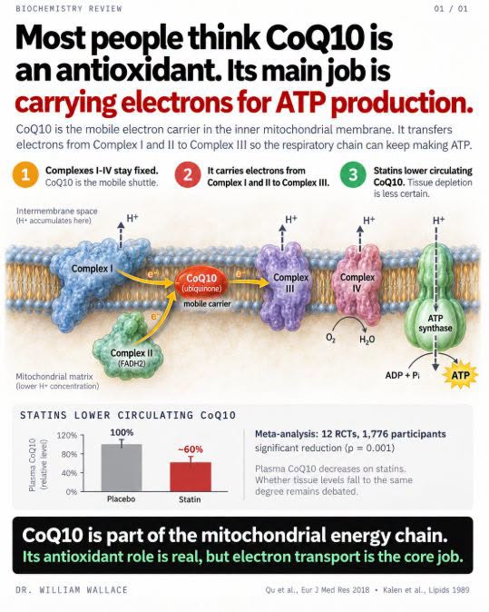

Most people who take CoQ10 think of it as an antioxidant. It is one. But that is not the most important thing it does.
CoQ10 is the only mobile electron carrier in the inner mitochondrial membrane. The electron transport chain has four protein complexes fixed in the membrane. Complex I accepts electrons from NADH. Complex II accepts them from FADH2. But neither can pass those electrons directly to Complex III. They hand them to CoQ10, which physically shuttles across the lipid bilayer to deliver them. Complex III passes them to Complex IV, which reduces oxygen to water and drives the proton gradient that ATP synthase uses to produce ATP.
Without CoQ10, the chain breaks between Complex I/II and Complex III. Electrons have nowhere to go. The proton gradient collapses. ATP production stalls. This is not an antioxidant function. This is the core mechanism of aerobic energy production.
CoQ10 is predominantly synthesized endogenously through the mevalonate pathway, the same pathway that produces cholesterol. HMG-CoA reductase is the rate-limiting enzyme. Statins inhibit HMG-CoA reductase. That is how they lower cholesterol. It is also how they lower CoQ10.
An updated meta-analysis by Qu et al. (2018) pooled 12 RCTs with 1,776 participants and found statins significantly reduced circulating CoQ10. The reduction was independent of statin type, intensity, or treatment duration. Both lipophilic and hydrophilic statins produced the same effect. This is consistent with what the biochemistry predicts: the pathway is shared.
On top of statin-induced depletion, CoQ10 in human heart tissue declines naturally with age. Kalén et al. (1989) measured CoQ10 concentrations in myocardial tissue and found levels peak around age 20, decline by more than 30% by age 40, and drop approximately 50% by age 80. The organ with the highest energy demand loses half its electron carrier over a lifetime.
A 2025 meta-analysis by Kovacic et al. (Journal of Nutritional Science, 7 RCTs, 389 patients) found CoQ10 supplementation significantly reduced statin-associated muscle symptoms measured by pain intensity. This is the most current pooled data on clinical outcomes.
One important nuance: while plasma CoQ10 depletion from statins is well established, whether intramuscular CoQ10 drops proportionally is inconsistent. Some studies found no change or even increases in muscle tissue CoQ10 during statin treatment. The plasma reduction may partly reflect reduced LDL particles, which are the primary carriers of CoQ10 in blood. The clinical significance of depletion beyond muscle symptoms remains debated.
Roughly 200 million people worldwide take statins. The mevalonate pathway that produces their target also produces the electron carrier their mitochondria depend on. The mechanism is not controversial. The clinical implications are still being defined.
Kalén et al., Lipids, 1989.
Qu et al., Eur J Med Res, 2018.
Kovacic et al., J Nutr Sci, 2025.
